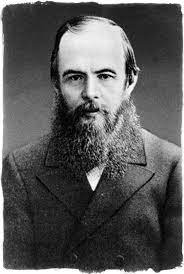

Dostoievsky

.FiodorN Mikhaïlovitch Dostoïevski (1821-1881)
Tên ông, độc giả Việt Nam vẫn thường gọi vắn là Đốt. Ông nhà văn người Nga này viết nên những tác phẩm để đời Anh em nhà Karamazov, Thằng ngốc, Tội ác và trừng phạt sinh vào một ngày thu: 30.10.1821.
Không phải ai cũng chịu được văn chương của Đốt, nhiều độc giả thế kỷ XIX, thế kỷ XX chê ông ở lối hành văn lắm khi cứ lủng củng, câu cú không được chấm phẩy, ngắt quãng nhịp nhàng, các nhân vật nếu không là “những con quỷ” thì cũng rất dị hợm, sinh tồn trong một thế giới thường là xám mưa, ảo não, thê lương như trong cơn ma mị nặng nề. Đốc tờ Chiz - một bác sĩ thần kinh chuyên nghiên cứu văn chương của Đốt đã thống kê: ¾ các nhân vật của Đốt nếu không mắc bệnh thần kinh thì cũng thường xuyên trong trạng thái bất cân bằng. Những cây đa cây đề của nền văn học Nga cũng không mấy thiện cảm với Đốt.L.Tolstoy, chẳng hạn, cho rằng “không thể coi” Anh em nhà Karamazov “là một tác phẩm văn học nghệ thuật được”. I.Turghenev thì không nề hà gọi Đốt là “cái mụn trứng cá xấu xí trồi lên giữa bộ mặt văn chương nước Nga”; V.Nabokov - người tạo ra “nàng Lolita” lại còn riết róng hơn “Hết thảy những tác phẩm của Dostoievsky đều lê thê, vô bổ, nhạt nhẽo, chỉ mang đến cho độc giả những ấn tượng rẻ tiền”. Ấy nhưng, đem so ra, ảnh hưởng của Đốt đối với những nhà văn hậu thế thường công kích ông như M.Gorky, S. Maugham, A. Tchekhov, kể cả Nabokov, cũng như những nhà văn sùng bái ông như G.Marquez, H.Hesse, J.P.Sartre, A.Camus, lại hoàn toàn ngang nhau!
Công lao lớn nhất Đốt mang góp cho nền văn học thế giới là ở chỗ: ông lấy con người làm nhân vật trung tâm trong toàn bộ các tác phẩm của mình. Nhưng khác hơn so với các nhà văn đương thời, Đốt không hề quay lưng khinh miệt bất cứ một phận người nhỏ bé nào. Mặt đối mặt với một xã hội đã bị luân lý hóa, Đốt trở thành luật sư của những kẻ khốn cùng, những người chìm xuống đáy xã hội - những gái đĩ, lưu manh, say rượu, những kẻ giết cha trong tâm tưởng… Con mắt tinh đời của Đốt nhìn ra trong sâu thẳm nhận thức các nhân vật của mình những dấu hiệu của sự vĩnh cửu - nơi mà Đốt hiểu rằng: Con người đã bắt gặp được đấng toàn năng - cũng là nơi lòng hướng thiện nảy sinh. Chủ nghĩa nhân đạo của Đốt là ở đó.
Xuyên suốt tất cả những tác phẩm nổi tiếng của Đốt là cuộc đấu tranh giành tự do cá nhân. Trong Tội ác và trừng phạt: Anh sinh viên Raskoniskov giết mụ cho vay nặng lãi để chứng tỏ với bản thân mình rằng: Anh ta là một con người tự do. Thằng ngốc – Hoàng thân Myskin có được tự do trong sự điên khùng; Những con quỷ có được tự do qua cách mạng; Vị thanh niên A.Dolgoruky lại muốn tự do bằng tiền… Đốt cho rằng: Con người có quyền tự do, nhưng để có được tự do cá nhân con người không có quyền xử sự với nhau theo phương châm “Với tôi mọi điều đều có thể”… Cách đối nhân xử thế như vậy với Đốt là đồng nghĩa với việc chối bỏ Thượng đế, không thể tương hợp với bản tính tự nhiên của con người và nhất định một ngày kia sẽ gặp những cơn tuột dốc đạo đức. Vậy thì, con người phải chọn gì khi đứng trước câu hỏi lớn Đốt đặt ra: Tự do với sự ẩn nhẫn, hay hạnh phúc mà không có tự do? Đối với Đốt sự khổ hạnh, ẩn nhẫn không là mục đích mà là phương tiện: Sự ẩn nhẫn mua được mọi thứ và trả nợ cho mọi thứ. Có lẽ, sự ẩn nhẫn là đồng bạc cuối cùng Đốt ném vào vòng quay số phận cho các nhân vật của mình cũng như cho chính bản thân mình. Nhưng có một điều, các nhân vật của Đốt chỉ chịu nhẫn chứ không thuần phục một bề. Họ trải qua những dằn vặt nội tâm, đi qua vô vàn những biến động của đời không phải để tìm lấy một vị thế trên thế gian mà là để đi về miền tĩnh lặng của tâm hồn.
Cái chết của người cha hà khắc, nghiện ngập, đam mê sắc dục vào đúng năm Dostoievsky 18 tuổi đã để lại một dấu ấn không phai mờ trong việc hình thành tính cách cũng như trong các tác phẩm sau này của Đốt. Năm ấy Đốt đã viết những dòng tiên tri “Con người là một bí mật cần phải giải đoán. Và nếu như anh có phải bỏ ra cả đời mình để đi tìm câu trả lời thì cũng đừng bao giờ than thở rằng anh đã lãng phí thời gian. Tôi nghiên cứu bí mật này bởi vì tôi muốn làm người”. Bỏ ra bốn mươi năm của đời mình Đốt có lẽ vẫn chưa khám phá hết bí mật này, nhưng những tác phẩm của ông để lại đủ để nhân loại gọi ông là một tài năng nghiệt ngã. Nghiệt ngã bởi Đốt quá đổi thương đời.
LÂM THÂN